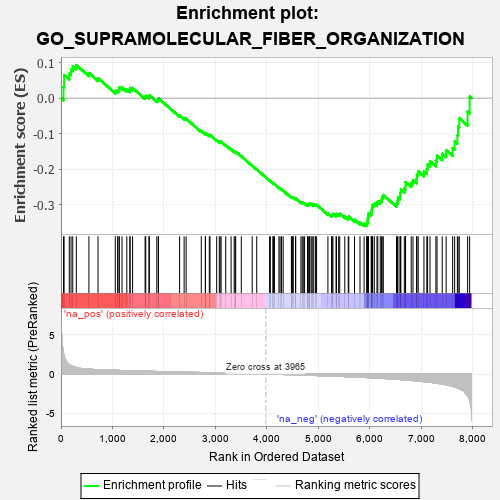
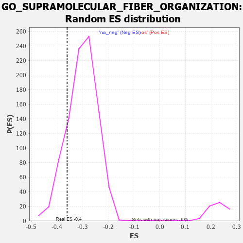

| | | Dataset | 7d |
| Phenotype | NoPhenotypeAvailable |
| Upregulated in class | na_neg |
| GeneSet | GO_SUPRAMOLECULAR_FIBER_ORGANIZATION |
| Enrichment Score (ES) | -0.36046243 |
| Normalized Enrichment Score (NES) | -1.1932917 |
| Nominal p-value | 0.16452992 |
| FDR q-value | 0.6421614 |
| FWER p-Value | 1.0 |
Table: GSEA Results Summary

Fig 1: Enrichment plot: GO_SUPRAMOLECULAR_FIBER_ORGANIZATION
Profile of the Running ES Score & Positions of GeneSet Members on the Rank Ordered List
| PROBE | GENE SYMBOL | GENE_TITLE | RANK IN GENE LIST | RANK METRIC SCORE | RUNNING ES | CORE ENRICHMENT | | 1 | TGFB3 | | | 49 | 2.654 | 0.0314 | No |
| 2 | RAC2 | | | 60 | 2.442 | 0.0648 | No |
| 3 | CSRP3 | | | 161 | 1.186 | 0.0689 | No |
| 4 | TPPP3 | | | 195 | 1.079 | 0.0800 | No |
| 5 | RHOH | | | 228 | 0.987 | 0.0899 | No |
| 6 | FSCN1 | | | 297 | 0.830 | 0.0930 | No |
| 7 | SRF | | | 542 | 0.615 | 0.0706 | No |
| 8 | ID1 | | | 719 | 0.555 | 0.0560 | No |
| 9 | MEF2C | | | 1054 | 0.473 | 0.0201 | No |
| 10 | MYO1D | | | 1099 | 0.464 | 0.0211 | No |
| 11 | SRC | | | 1128 | 0.459 | 0.0240 | No |
| 12 | NCK2 | | | 1131 | 0.458 | 0.0303 | No |
| 13 | CRIPT | | | 1185 | 0.449 | 0.0299 | No |
| 14 | LOXL4 | | | 1278 | 0.434 | 0.0243 | No |
| 15 | TBCD | | | 1338 | 0.422 | 0.0228 | No |
| 16 | KPTN | | | 1341 | 0.422 | 0.0285 | No |
| 17 | FKBP4 | | | 1390 | 0.412 | 0.0282 | No |
| 18 | DRG1 | | | 1633 | 0.368 | 0.0026 | No |
| 19 | TPPP | | | 1646 | 0.365 | 0.0062 | No |
| 20 | TPX2 | | | 1708 | 0.355 | 0.0035 | No |
| 21 | PLOD3 | | | 1715 | 0.353 | 0.0077 | No |
| 22 | SMAD4 | | | 1860 | 0.326 | -0.0060 | No |
| 23 | PAK3 | | | 1889 | 0.322 | -0.0050 | No |
| 24 | CUL3 | | | 1893 | 0.321 | -0.0008 | No |
| 25 | WASF1 | | | 2303 | 0.259 | -0.0493 | No |
| 26 | CLIP4 | | | 2391 | 0.247 | -0.0569 | No |
| 27 | MET | | | 2430 | 0.240 | -0.0584 | No |
| 28 | SLIT2 | | | 2724 | 0.195 | -0.0930 | No |
| 29 | FER | | | 2803 | 0.183 | -0.1004 | No |
| 30 | BRK1 | | | 2805 | 0.183 | -0.0979 | No |
| 31 | DAPK3 | | | 2880 | 0.169 | -0.1049 | No |
| 32 | MTM1 | | | 2893 | 0.168 | -0.1041 | No |
| 33 | WNT4 | | | 3023 | 0.146 | -0.1185 | No |
| 34 | MAP2 | | | 3074 | 0.140 | -0.1229 | No |
| 35 | CHP1 | | | 3089 | 0.138 | -0.1227 | No |
| 36 | GPX1 | | | 3109 | 0.135 | -0.1232 | No |
| 37 | TWF1 | | | 3199 | 0.123 | -0.1328 | No |
| 38 | SMAD3 | | | 3303 | 0.105 | -0.1445 | No |
| 39 | FMN1 | | | 3363 | 0.095 | -0.1506 | No |
| 40 | GMFB | | | 3381 | 0.091 | -0.1515 | No |
| 41 | GAS2 | | | 3392 | 0.090 | -0.1515 | No |
| 42 | FES | | | 3501 | 0.077 | -0.1642 | No |
| 43 | NF1 | | | 3713 | 0.040 | -0.1905 | No |
| 44 | SPAST | | | 3801 | 0.027 | -0.2012 | No |
| 45 | ACTN1 | | | 4050 | -0.016 | -0.2327 | No |
| 46 | SFRP2 | | | 4065 | -0.018 | -0.2342 | No |
| 47 | MTOR | | | 4114 | -0.025 | -0.2400 | No |
| 48 | ABL1 | | | 4125 | -0.027 | -0.2409 | No |
| 49 | MZT1 | | | 4145 | -0.032 | -0.2428 | No |
| 50 | ARPC2 | | | 4232 | -0.047 | -0.2531 | No |
| 51 | ARL2 | | | 4254 | -0.050 | -0.2551 | No |
| 52 | WNT11 | | | 4282 | -0.056 | -0.2577 | No |
| 53 | BAG4 | | | 4314 | -0.061 | -0.2608 | No |
| 54 | EPS8 | | | 4474 | -0.088 | -0.2799 | No |
| 55 | HIP1 | | | 4485 | -0.092 | -0.2798 | No |
| 56 | MEF2A | | | 4499 | -0.095 | -0.2801 | No |
| 57 | ILK | | | 4510 | -0.096 | -0.2801 | No |
| 58 | ABI2 | | | 4554 | -0.106 | -0.2840 | No |
| 59 | APC | | | 4558 | -0.107 | -0.2829 | No |
| 60 | ARPC3 | | | 4659 | -0.129 | -0.2938 | No |
| 61 | LIMK1 | | | 4684 | -0.136 | -0.2950 | No |
| 62 | ARF6 | | | 4704 | -0.140 | -0.2954 | No |
| 63 | WASF3 | | | 4730 | -0.145 | -0.2965 | No |
| 64 | MYO5A | | | 4787 | -0.155 | -0.3015 | No |
| 65 | FLII | | | 4795 | -0.156 | -0.3002 | No |
| 66 | TPPP2 | | | 4800 | -0.157 | -0.2984 | No |
| 67 | WDR1 | | | 4824 | -0.163 | -0.2991 | No |
| 68 | BIN3 | | | 4832 | -0.165 | -0.2976 | No |
| 69 | DLG1 | | | 4860 | -0.169 | -0.2987 | No |
| 70 | CLU | | | 4889 | -0.174 | -0.2998 | No |
| 71 | CAPZB | | | 4908 | -0.179 | -0.2995 | No |
| 72 | CAP2 | | | 4943 | -0.186 | -0.3012 | No |
| 73 | ARAP1 | | | 4963 | -0.191 | -0.3009 | No |
| 74 | HDAC6 | | | 5183 | -0.244 | -0.3254 | No |
| 75 | SSH1 | | | 5254 | -0.258 | -0.3307 | No |
| 76 | PICK1 | | | 5265 | -0.263 | -0.3282 | No |
| 77 | FAT1 | | | 5281 | -0.267 | -0.3263 | No |
| 78 | ELMO2 | | | 5341 | -0.283 | -0.3299 | No |
| 79 | EPHA1 | | | 5349 | -0.285 | -0.3267 | No |
| 80 | KIF19 | | | 5392 | -0.294 | -0.3279 | No |
| 81 | LATS1 | | | 5412 | -0.298 | -0.3261 | No |
| 82 | KIF2A | | | 5511 | -0.322 | -0.3340 | No |
| 83 | NDE1 | | | 5578 | -0.339 | -0.3376 | No |
| 84 | TTC17 | | | 5589 | -0.341 | -0.3340 | No |
| 85 | TTBK2 | | | 5700 | -0.376 | -0.3428 | No |
| 86 | BBS4 | | | 5806 | -0.407 | -0.3504 | No |
| 87 | ARPC4 | | | 5886 | -0.430 | -0.3543 | Yes |
| 88 | CAP1 | | | 5935 | -0.447 | -0.3541 | Yes |
| 89 | DCTN1 | | | 5950 | -0.454 | -0.3495 | Yes |
| 90 | AGFG1 | | | 5955 | -0.457 | -0.3435 | Yes |
| 91 | ACTN2 | | | 5960 | -0.458 | -0.3375 | Yes |
| 92 | CENPJ | | | 5968 | -0.460 | -0.3318 | Yes |
| 93 | TPM2 | | | 5970 | -0.460 | -0.3254 | Yes |
| 94 | JMY | | | 6023 | -0.479 | -0.3253 | Yes |
| 95 | CKAP5 | | | 6032 | -0.482 | -0.3195 | Yes |
| 96 | RAC1 | | | 6036 | -0.484 | -0.3130 | Yes |
| 97 | ADD2 | | | 6046 | -0.487 | -0.3072 | Yes |
| 98 | EVL | | | 6052 | -0.490 | -0.3009 | Yes |
| 99 | DBNL | | | 6084 | -0.501 | -0.2977 | Yes |
| 100 | GBA2 | | | 6136 | -0.515 | -0.2969 | Yes |
| 101 | ROCK1 | | | 6152 | -0.520 | -0.2915 | Yes |
| 102 | MYO1E | | | 6200 | -0.537 | -0.2898 | Yes |
| 103 | TPM1 | | | 6226 | -0.545 | -0.2853 | Yes |
| 104 | CDC42 | | | 6236 | -0.548 | -0.2787 | Yes |
| 105 | SVIL | | | 6259 | -0.558 | -0.2736 | Yes |
| 106 | TRPV4 | | | 6515 | -0.668 | -0.2966 | Yes |
| 107 | KANK1 | | | 6536 | -0.678 | -0.2895 | Yes |
| 108 | DDR2 | | | 6542 | -0.681 | -0.2805 | Yes |
| 109 | ARF1 | | | 6583 | -0.701 | -0.2757 | Yes |
| 110 | ALMS1 | | | 6590 | -0.704 | -0.2664 | Yes |
| 111 | LTBP2 | | | 6600 | -0.712 | -0.2575 | Yes |
| 112 | CLIP1 | | | 6667 | -0.746 | -0.2553 | Yes |
| 113 | CATIP | | | 6690 | -0.756 | -0.2474 | Yes |
| 114 | PAK1 | | | 6691 | -0.757 | -0.2366 | Yes |
| 115 | SPEF1 | | | 6801 | -0.815 | -0.2390 | Yes |
| 116 | FHOD3 | | | 6835 | -0.834 | -0.2313 | Yes |
| 117 | MYH11 | | | 6905 | -0.870 | -0.2278 | Yes |
| 118 | ESPN | | | 6911 | -0.873 | -0.2160 | Yes |
| 119 | GHSR | | | 6937 | -0.894 | -0.2065 | Yes |
| 120 | MYH10 | | | 7048 | -0.966 | -0.2069 | Yes |
| 121 | PXDN | | | 7104 | -1.001 | -0.1997 | Yes |
| 122 | LDB3 | | | 7119 | -1.008 | -0.1871 | Yes |
| 123 | COTL1 | | | 7166 | -1.046 | -0.1782 | Yes |
| 124 | CIB1 | | | 7280 | -1.152 | -0.1762 | Yes |
| 125 | MYO7A | | | 7302 | -1.175 | -0.1622 | Yes |
| 126 | LOXL2 | | | 7403 | -1.269 | -0.1570 | Yes |
| 127 | CLIP2 | | | 7479 | -1.374 | -0.1470 | Yes |
| 128 | KANK3 | | | 7605 | -1.559 | -0.1409 | Yes |
| 129 | MCU | | | 7644 | -1.637 | -0.1225 | Yes |
| 130 | MYO6 | | | 7697 | -1.753 | -0.1042 | Yes |
| 131 | P4HA1 | | | 7710 | -1.798 | -0.0802 | Yes |
| 132 | PLS1 | | | 7734 | -1.855 | -0.0568 | Yes |
| 133 | CAV3 | | | 7896 | -2.739 | -0.0385 | Yes |
| 134 | ARRB1 | | | 7935 | -3.377 | 0.0046 | Yes |
Table: GSEA details [plain text format]

Fig 2: GO_SUPRAMOLECULAR_FIBER_ORGANIZATION: Random ES distribution
Gene set null distribution of ES for GO_SUPRAMOLECULAR_FIBER_ORGANIZATION